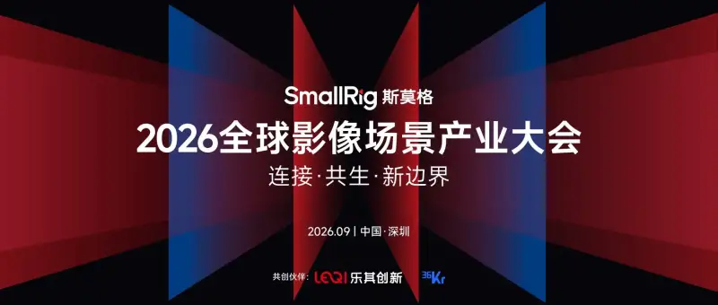

As phones, action cameras, AI tools, robots, and wearables keep entering the creative scene, imaging is hard to define by one type of device or industry alone. There are more creators, and their needs are more scattered. Machines also begin to sense the world through lenses. Should the next generation of products start from technology, or find answers in real scenes?

On September 22, the 2026 Global Imaging Scenes Industry Conference will be held in Shenzhen. It is hosted by Leqi Innovation SmallRig together with 36Kr. According to the agenda, this conference has the theme "Connection, Symbiosis, New Boundaries." It consists of one main stage and three sub-forums on technology, cultural creativity, and talent. It invites imaging brands, tech companies, creators, research institutes, and industry partners to discuss the changes happening in imaging scenes from different angles.
The right to define imaging is moving from the device to the scene
In the past, imaging products usually advanced along image quality, performance, and specs. Today, needs such as cycling, live streaming, short dramas, and even machine vision begin to shape the form of products in return.
Based on this industry trend, representatives from Insta360, vivo, Sony, Nikon, Honor, Sigma, OBSBOT, and SmallRig will share views on different product paths, such as 360 cameras, phone imaging, professional gear, and AI auto-tracking. Li Ge, vice chairman of the China Federation of Literary and Art Circles and chairman of the China Photographers Association, will start from the rise of mass creators and look at the industry changes brought by expanding content production.
Some practices from outside the traditional imaging industry will also offer new reference points. Wang Yihui of LandSpace will use extreme sites such as the Zhuque-3 launch aerospace imaging scene as examples, to share how special scenes test products and workflows. Fan Xuanhe, CPO of Hypershell, will share how exoskeletons inspire the way people create. Jiang Guomin, who won the Hong Kong Film Award for Best Cinematography, and photography creator Wang Song Aohan will also look at the value of imaging from professional creation and popular practice.
Scenes grow more specific, and the industry needs a fresher map to observe them
This is not the first time the Global Imaging Scenes Industry Conference has tried to understand the imaging industry through "scenes." At the first SmallRig Global Imaging Scenes Industry Conference hosted by Leqi Innovation, the released "Global Top 10 Imaging Scenes List" included new content such as virtual production, micro short dramas, supply-chain live streaming, and immersive store visits. It also put forward the trend judgment of "technology rising" and "production sinking."
Over two years, AI entered the content production flow, phones took on more complex narrative work, professional institutions moved into lightweight content, and ordinary people turned from viewers into creators. How the SmallRig "2025-2026 Global Top 12 Imaging Scenes Report" will redraw the link between creative demand and product opportunity will be revealed on site.
Crowdfunding powers imaging-tech innovation and validates the global market in advance
For a technology to move from concept to product, you must not only solve R and D and application problems. You must also validate real demand, calibrate the product definition, and find a path to market before launch. This technology sub-forum will start from uses such as AI vision, smart tracking, robots, and innovative hardware, and extend the discussion to how technology, product, market, and capital work together.
For the growing number of Chinese tech products that go to the global market, the ability to validate overseas user demand early often directly shapes later product innovation and commercial direction. In this process, crowdfunding is no longer only a way to raise money or sell. It is becoming a front-loaded path to gather user feedback, refine the product definition, build early brand awareness, and connect channels and investor resources before the official launch.
Langhan Technology is the first Chinese service provider to hold official certification from both Kickstarter and Indiegogo, and one of Kickstarter's first premium partners. Since its founding in 2017, Langhan has long helped Chinese tech brands expand into global markets through overseas crowdfunding and DTC marketing. Per its public information, Langhan has handled more than 300 million US dollars in cumulative crowdfunding GMV, built more than 70 crowdfunding projects that each passed one million dollars, and served brands such as Anker, Xiaomi, Ninebot, TCL, and Midea.
At this technology sub-forum, Xia Weiji, a partner at Langhan Technology, will draw on the team's specific projects and hands-on experience to share how crowdfunding helps companies validate market demand, refine product definition, and move tech products from an innovative idea to the global market. How does an innovation validate demand before mass production? How do you adjust the product and its messaging based on overseas user feedback? How do you go from one crowdfunding campaign to brand building, channel expansion, and global operations? These questions may all get strong answers in this session.
At the same time, representatives from institutions such as Cathay and Tiantu will share their views on market opportunities in new technology and new products from an investor angle. Product teams, crowdfunding platforms, and investment institutions will form a dialogue of different views at the conference. This gives useful reference for imaging-scene innovation projects as they validate product direction, understand overseas demand, and connect global business resources.
Cultural expression, scene iteration, and talent building in the imaging industry
As functional differences shrink, aesthetics, culture, and emotional value also become part of product competition. At the cultural creativity sub-forum, Pei Lan, managing director of Tiantu Capital, will look at how aesthetics shape the value of hardware from a capital angle. Guests such as Yang Xi, deputy general manager of the Palace Museum Wenhua Art, and graffiti artist Li Yuyu will share how cultural expression moves from a symbol into a product, and gets understood, claimed, and spread in daily use. Qiao Yan, chief director of the first season of Moon Landing, will bring observations on how IP, creators, and ordinary users together shape imaging culture.
Competition in new scenes ultimately comes down to talent and organizational capability. At the talent sub-forum, Liu Hui, dean of the School of Drama and Film at the Shenzhen University College of Arts, and Zhang Dongjun, vice dean of the School of Future Technology at Shenzhen Polytechnic University, will look at how innovation talent grows from the view of universities and industry-education research. Guests such as Yu Yafei, general manager of EverHarbour AI smart glasses, and Liu Huijun, founder of Chengmu Technology, will draw on products such as AI glasses and robot dogs to share the real demand for cross-disciplinary skills in new scenes. The conference will also hold the unveiling ceremony for the Leqi Innovation Shenzhen Postdoctoral Innovation Practice Base.
From professional gear to smart devices, from extreme shooting to daily recording, the boundaries of imaging scenes keep changing with creators, technology, and the way people use tools. Behind the change is a shared adjustment in product definition, content production, business conversion, and talent structure.
On September 22, different experiences from imaging brands, tech companies, frontline creators, investment firms, universities, and research institutes will meet in Shenzhen. Who can identify real demand earlier, and who can turn technology into a product that is truly used and understood? These observations from different parts of the industry may further outline the next generation of imaging scenes.